２０２５年１１月中旬に、ミルモグッズでおなじみのフクヤさんより『ミルモでポン！ マスコットぬいぐるみ～聖歌隊～』が発売されました。
こちらは店頭販売ではなく、クレーンゲームなどのプライズ品としての販売になります。
私はクレーンゲームが得意ではないので、いつものようにメルカリで出品されていたものをゲットしました(^◇^;)
今回のぬいぐるみは、原作にも登場するミルモ・リルム・ムルモの聖歌隊バージョンです。
商品の紹介画像は、記録も兼ねてフクヤさんの公式ホームページから引用させていただきました。
画像に書かれている「公式イラストを再現！」の通り、原作での衣装や天使の輪っか、ミルモたちが手に持っている聖歌集も原作通りにしっかり再現されていますね！
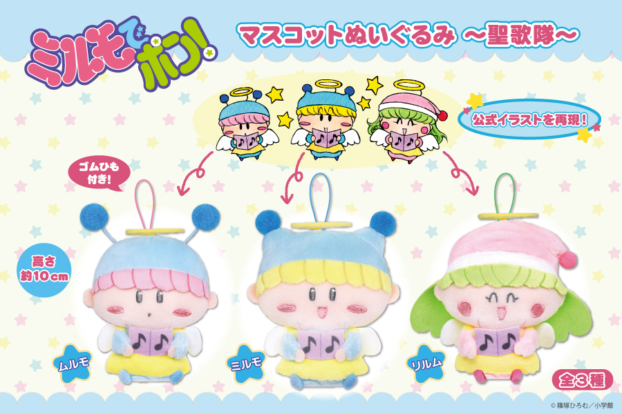
取扱店舗情報は公式サイトで確認できるのですが、あまり多くないようです。
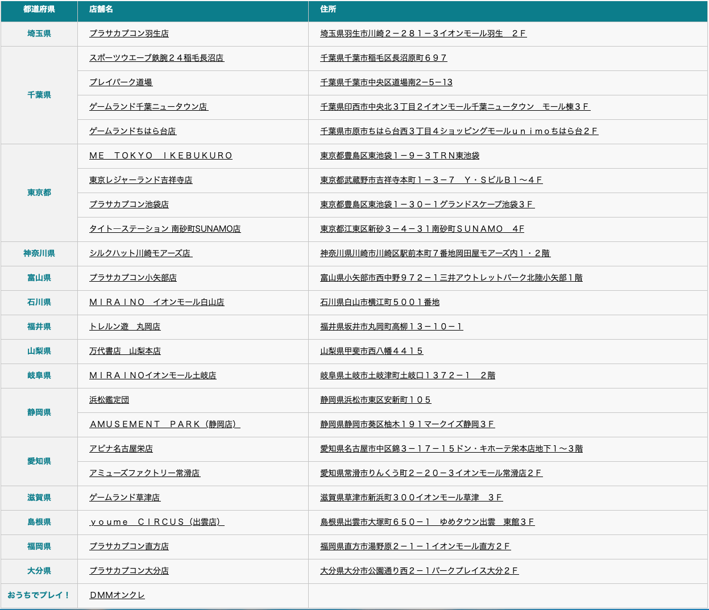
お店が近くになくてもネット上でチャレンジできる「おうちでプレイ！」でもゲットできるようです。
（１２月７日時点の状況ですが、残りわずかとなっていました・・）
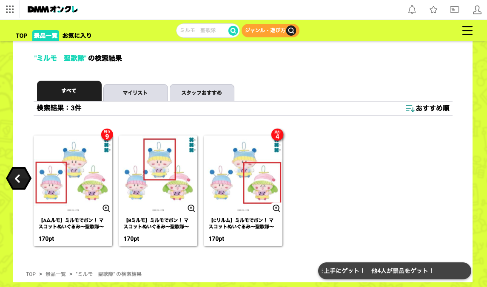
冒頭で書きましたように、私はメルカリにて３種類をまとめてゲットしました。
ここからは我が家で撮影した写真をもとにレポートしますね。
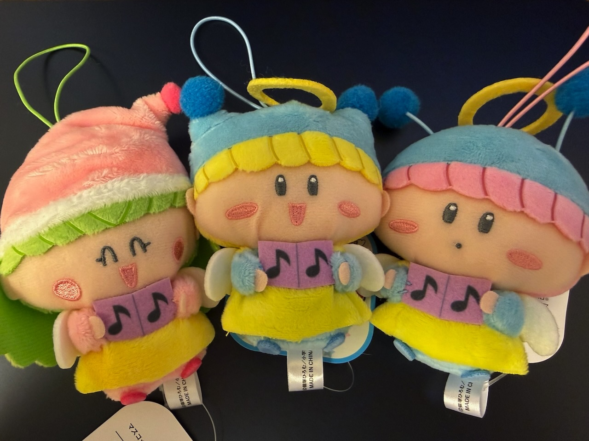
まずは３人を並べて記念撮影！
気のせいかムルモが一番大きく見える・・(^◇^;)
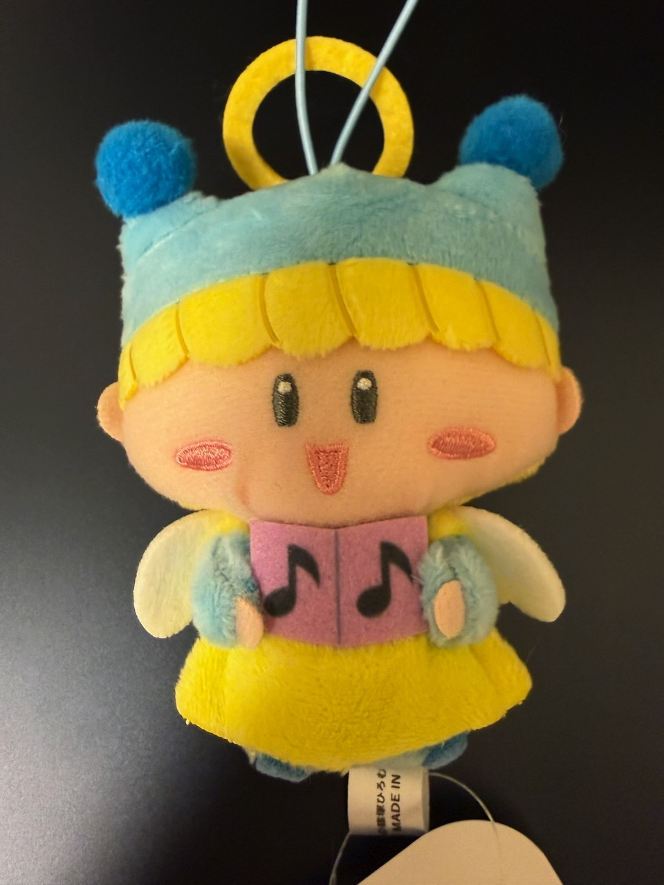
ミルモをアップで！
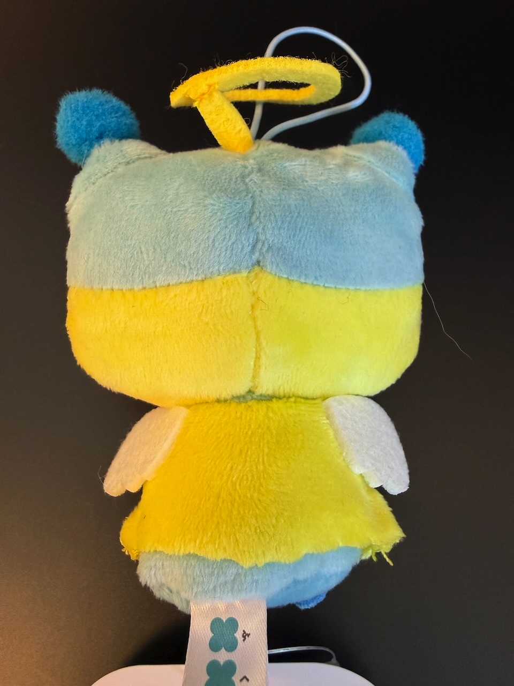
背面の羽根はこんな風に生えています。
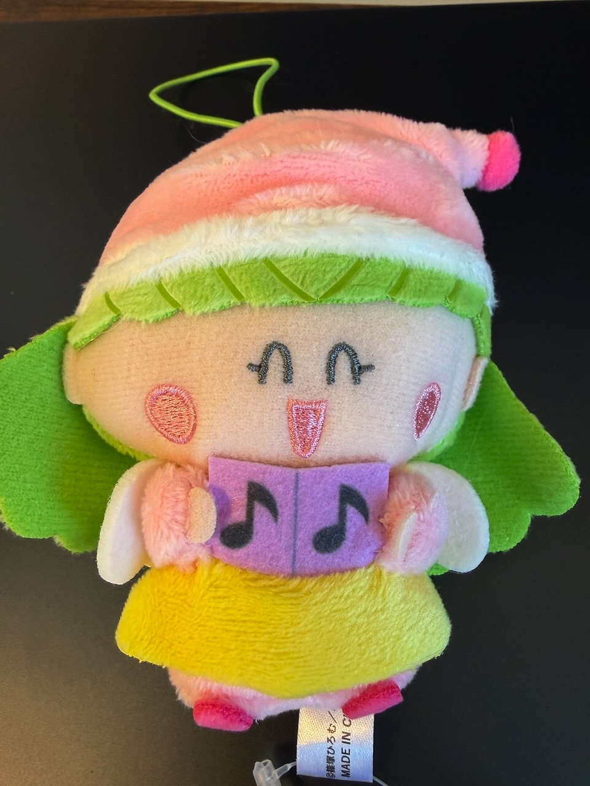
続いてリルムです。
ニコニコ顔は原作と同じですね！
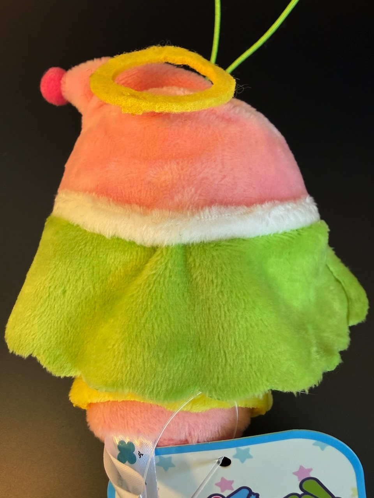
リルムの髪の毛はこのようになっています。
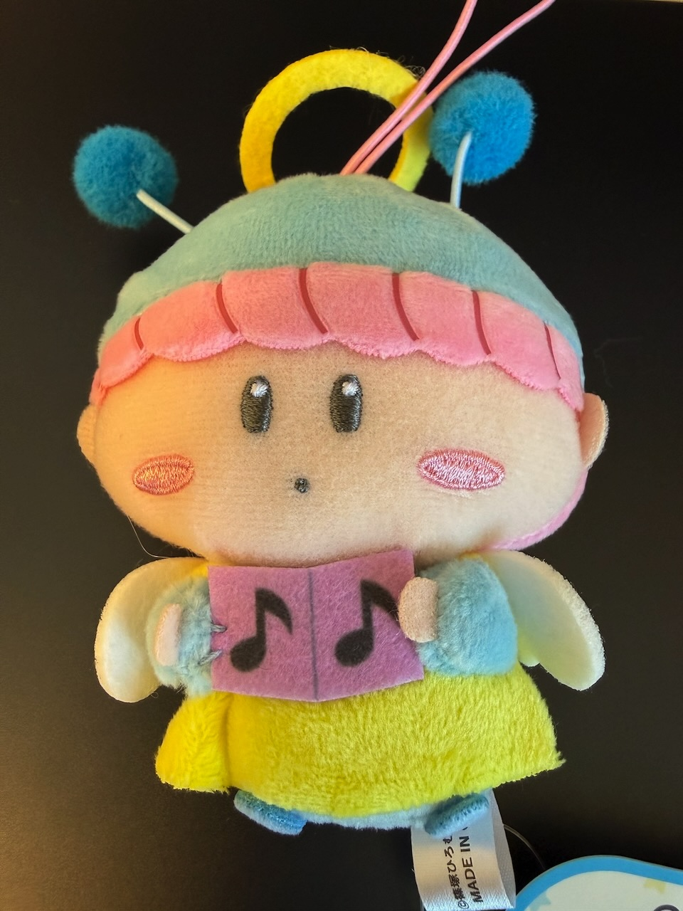
ムルモです。
口元の形はムルモだけ違います。
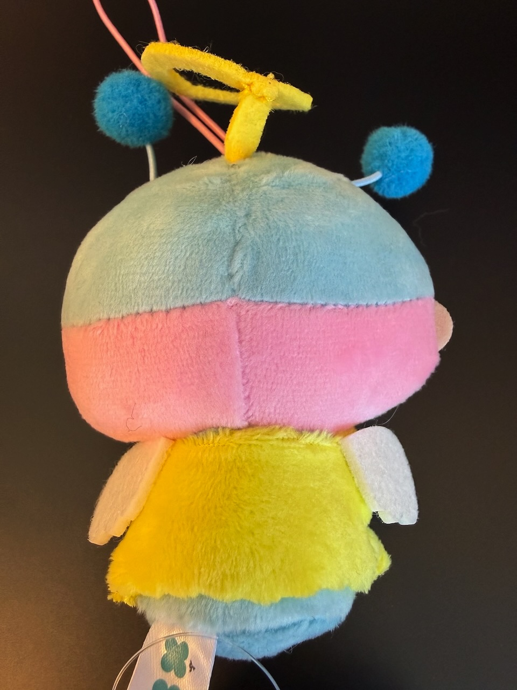
天使の輪っかはこのようにぬいぐるみ本体につながっています。
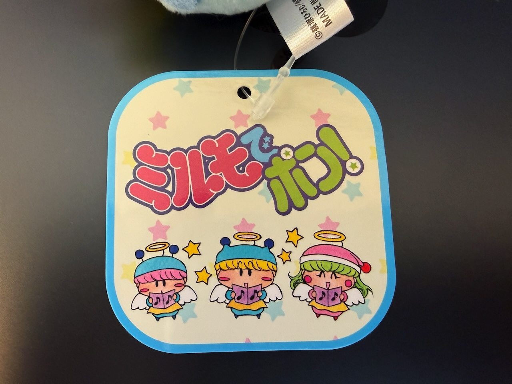
タグの表面。
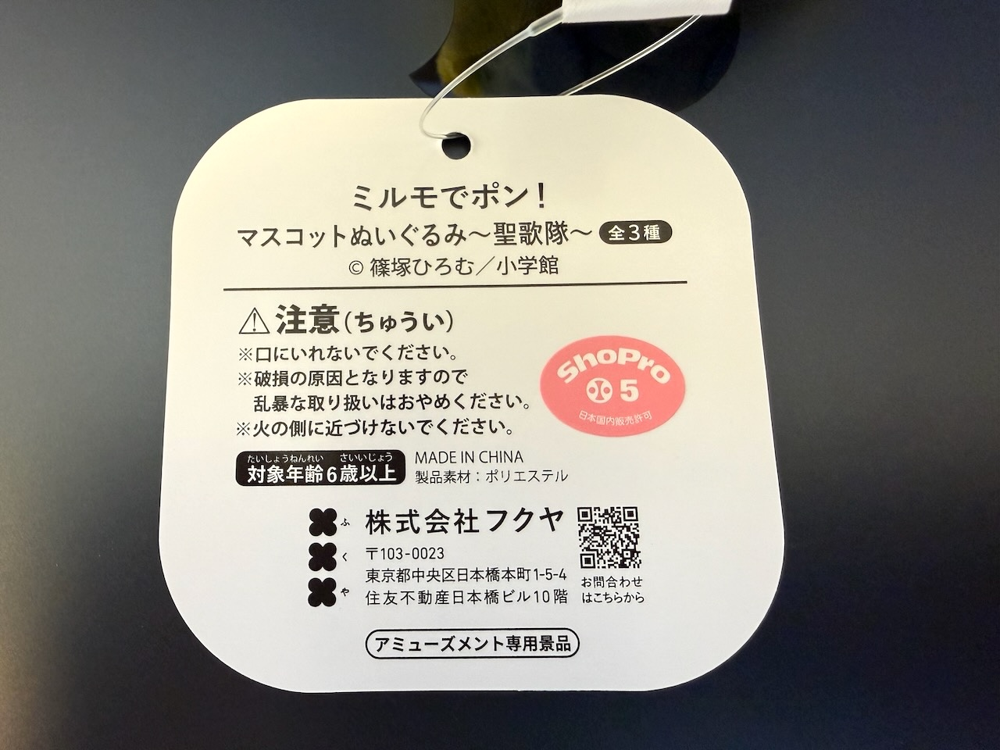
タグの裏面。
聖歌隊バージョンはXでもかわいい！という声が多数でした。
今後もいろんなバージョンの妖精たちをマスコットぬいぐるみ化していただきたいところです(^^)
(2025/12/7)